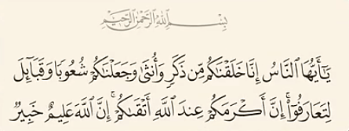

جواب
در هیچ جای قرآن گفته نشده که آدم و حوا مال هفت هزار سال پیشه
و اصلا در متون دینی اسلامی زمانی برای زندگی آدم و حوا مشخص نشده
در سال 1980 دانشمند انگلیسی دکتر آلن ویلسون
استاد بیوشیمی دانشگاه کالیفرنیا با بررسی MTN DNA در بدن 147 نفر از
کشور های مختلف کشف میکنه که تمام انسانهای روی کره زمین فرزند یک زن
هستن که حدود 200 هزار سال قبل در آفریقا زندگی میکرده
و در سال 2013 پائولو فرانکلاچی متخصص ژنتیک
تحقیقات بسیار مهمی در زمینه DNA انجام میده و نشون میده که پدر مشترک
تمام بشریت یک مرده که به اصطلاح علمی بهش میگن "آدم کروموزوم Y" که
حدود 200 هزار سال قبل در آفریقا زندگی میکرده
چقدر زیبا خداوند به این حقیقت علمی که 1400 سال بعد کشف شده اشاره
میکنه و در آیه 13 سوره حجرات میگه:
ای مردم ما شما را از یک مرد و زن آفریدیم و ملتها و قبیلهها قرار
دادیم تا یکدیگر را بشناسید

چالش شما برای اسلام 10 هزار سال بود ولی چالش اسلام برای شما 200 هزار
سال